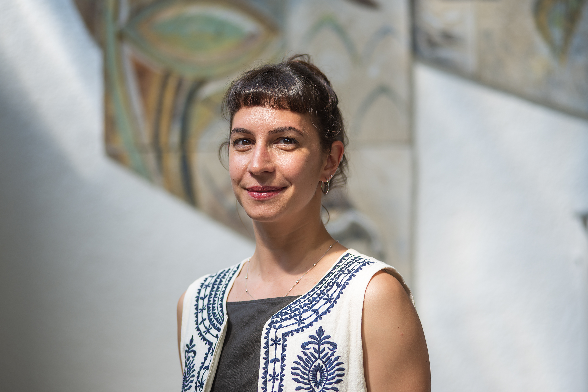

Cecilia Seri
Hi!
I am a PhD candidate in Economics at UNU-MERIT on the 2026–2027 Job Market.
My primary fields are the economics of innovation and firm dynamics, with a focus on market power and an interest in regional economics and development.
My PhD thesis focuses on technological transformations over the long-run, their interrelations with firms' strategies and countries' development, and the implications for changes in global leadership. I expect to submit my thesis in the second half of 2026.
In 2024–2025, I visited the European Commission's Joint Research Centre in Seville. I have also worked as a consultant for IDB Invest and UNIDO.
Curriculum Vitae →